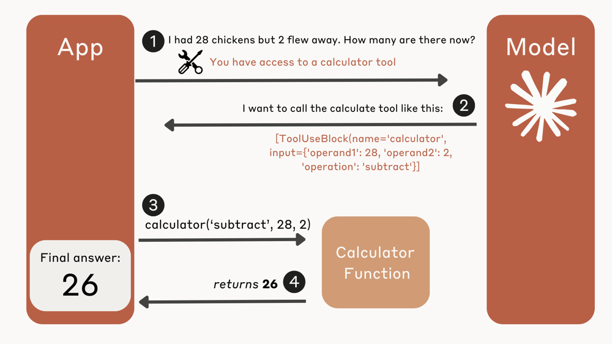

クイズ！ GPT・Claude・Geminiのうち、Web検索が一番うまいのはどのモデルでしょう？
前準備メモ
docker起動uvx mcp-server-fetchは1回やっておく（ハング対策）
クイズ！ GPT・Claude・Geminiのうち、Web検索が一番うまいのはどのモデルでしょう？
- Event:
みんなのPython勉強会#113
- Presented:
2025/03/27 nikkie
LLM入場
GPT
Claude
Gemini
GPT
OpenAIが提供する LLMのシリーズ
直近では 4oが画像生成できるようになった
今回使うのは gpt-4o （有料）
Claude
Anthropicが提供する LLMのシリーズ
今回使うのは claude-3-5-sonnet-latest （有料）
Gemini
Googleが提供する LLMのシリーズ
最新は Gemini 2.5 Pro
今回使うのは gemini-2.0-flash （無料だが、訓練データになる。OpenAI API互換でも使える）
LLMがWeb検索？
「チャットできるだけですよね？」
人類はLLMを拡張したい（Augmented）
知っている知識は訓練時点までに限定される（カットオフ）
文章の続きを作るだけなので、計算機のような正確な計算はできない
🏃♂️2024年話題になっていた RAG は拡張の1つ。参照する文書を追加する
Tool use による拡張
{kind=link}
Tool use による拡張
LLMに「こんなToolも使えるよ」と示す
LLMはToolを使うかを判定し、使うときは Toolを使っているテキストを出力
Toolを実行するのは、私たちのプログラム
いまホットな例：MCP
Anthropicが提案 (2024/11)
2025/03時点で、ほとんどデファクトスタンダード（無視できない）
MCP
サーバとクライアント
クライアントの例：Claude Desktop、Cursorなどなど。今回 自作
TypeScript・Python・Go・Rustで多様なサーバが日々増えてます！
デモ！！
使えるツール： Brave Search（検索） 、Webページ取得
「PyCon JP 2025のテーマやコンセプトについて調査してください」
gemini-2.0-flash
検索の様子 https://gist.github.com/ftnext/cf974195c3d8257ee73d0724eaf8033c
PyCon JP 2025は、2025年9月26-27日に広島国際会議場で開催される予定です。現在、主催メンバーが中心となって、全体的なコンセプトとテーマを決定するための作業が進められています。具体的なテーマやコンセプトはまだ発表されていません。gpt-4o
検索の様子 https://gist.github.com/ftnext/43685381d8ac331f9216e141b5f0710c
PyCon JP 2025 is scheduled to take place on September 26-27, 2025, at the International Conference Center Hiroshima. The event is organized by volunteers, and they are currently preparing for ticket sales, speaker recruitment, and sponsorship opportunities. However, specific details about the theme or concept for PyCon JP 2025 have not been disclosed yet. For the latest updates, you might want to keep an eye on their [official website](https://2025.pycon.jp/).claude-3-5-sonnet-latest
検索の様子 https://gist.github.com/ftnext/113e8e6a7077b14adb7558004b3fbf17
公式サイトを確認しましたが、現時点ではまだテーマやコンセプトは公開されていないことが確認できました。サイトは基本的な開催情報（日時・場所）のみが掲載されており、現在も準備段階であることが分かります。
まとめると：
- PyCon JP 2025は広島で初めて開催される大規模なPythonカンファレンスです
- 開催日時と場所は決定していますが、テーマやコンセプトについては現在も運営チームによって検討が進められている段階です
- 正式なテーマやコンセプトは、今後の運営チームのミーティングを経て発表される予定です
テーマやコンセプトについての最新情報は、PyCon JP 2025の公式サイト（https://2025.pycon.jp/）や公式SNSアカウントで随時発表されると思われます。実は 座長日報 があります
これはまだ正式なメッセージではありませんが、 3.14 からの連想で、コンセプトの言語化を試みたので、ご紹介します。「Python の輪、広島から広がる」
所感
ClaudeだけTool use 別格 では？
OpenAI API互換エンドポイント利用でGeminiには不利だったかも
openai-agents SDKやgoogle-genai SDKを組み込んで、よりフェアな評価が残る
IMO：Anthropic、したたかすぎでは？
プロトコルって人畜無害な顔して展開（言語非依存なのでハッカーが集った）
Tool useが現在一番うまいのはClaude
MCPが広がるほど、Claudeが輝く 名プロデュース
以上、nikkie（にっきー）でした！
みんなのPython勉強会 スタッフ・4代目LT王子
機械学習エンジニア・LLM・自然言語処理（We're hiring!）
ブログ 連続 860 日突破
Appendix：ブログ版
GPT・Claude・Geminiのうち、Brave Search toolの使い方が一番うまいのは誰でしょう？クイズ〜〜！！